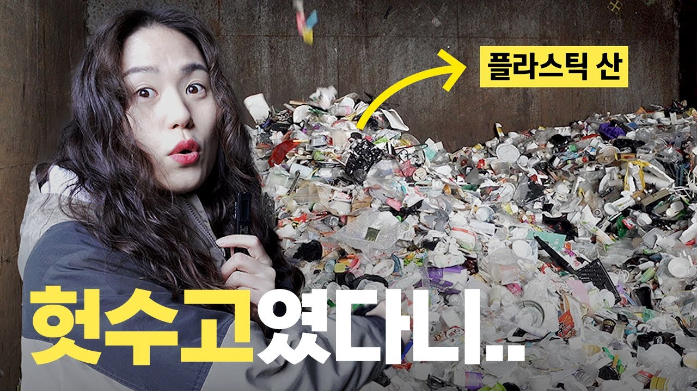

14F
14F 크랩 KLAB
크랩 KLAB 스브스뉴스
스브스뉴스14F
![14F: [EN] 한국인들은 왜 이렇게 급식에 진심일까🥄ㅣ돈슐랭 / 14F](assets/v4/5-L3V7rGuhk.jpg)
[EN] 한국인들은 왜 이렇게 급식에 진심일까🥄ㅣ돈슐랭 / 14F
영상ID(URL에서 파생): 5-L3V7rGuhk
수집 당시 조회수 기준일:2026.10.18
공식 썸네일 원본
발표 본문은 15장으로 마칩니다. 전체 표·분류 규칙·출처와 해석의 한계는 여기에서 확인할 수 있습니다.
원본 7열: 채널명, 영상 제목, 영상 URL, 업로드 날짜, 조회수, 영상 길이, 영상 설명. video_id는 URL에서 파생한 값이며 collected_at/content_format은 원본 컬럼으로 가정하지 않았습니다.
| 채널 | 방송사 | 영상 수 | 상위권 수 | 채널 상위권 최소 조회수 |
|---|---|---|---|---|
| 14F | MBC | 575 | 144 | 276,024 |
| 크랩 KLAB | KBS | 370 | 93 | 568,867 |
| 스브스뉴스 | SBS | 315 | 79 | 613,940 |
| 소탐대실 | JTBC | 47 | 12 | 645,293 |
| 비디오머그 | SBS | 373 | 94 | 294,887 |
상위권: 채널별 조회수순 상위 25%. n×0.25를 올림하고 동률은 원본 행 순서를 유지합니다. 전체 422/1,680편(25.1%).
상위권 비중: 해당 주제·제목 집단 중 채널 내부 상위권 수/해당 집단 수. 조회수 증가율이나 미래 성공확률이 아닙니다. 비교 기준 약 25%와 채널별 반올림 차이를 구분합니다.
반복 안내 줄을 제거한 설명+제목에 단어 사전을 적용했습니다. 복수 태그 723편, 태그 없음 282편. 국가명·다의어·홍보 잔여로 잘못 붙은 태그가 있을 수 있습니다. 행 합계는 100%가 아닙니다.
| 채널 | 주제 태그 | 태그 수/채널 n | 제작 비중 | 상위권/태그 n | 상위권 비중 | 제목만 태그: 상위권/n |
|---|---|---|---|---|---|---|
| 14F | 정치·국제 | 168/575 | 29.2% | 49/168 | 29.2% | 22/83 |
| 14F | 경제·소비 | 140/575 | 24.3% | 30/140 | 21.4% | 10/50 |
| 14F | 기술·디지털 | 49/575 | 8.5% | 7/49 | 14.3% | 4/28 |
| 14F | 음식·외식 | 154/575 | 26.8% | 51/154 | 33.1% | 41/105 |
| 14F | 건강·의학 | 34/575 | 5.9% | 9/34 | 26.5% | 4/8 |
| 14F | 사회·생활 | 81/575 | 14.1% | 18/81 | 22.2% | 5/25 |
| 14F | 과학·환경 | 39/575 | 6.8% | 14/39 | 35.9% | 4/9 |
| 14F | 문화·연예 | 56/575 | 9.7% | 16/56 | 28.6% | 7/20 |
| 크랩 KLAB | 정치·국제 | 147/370 | 39.7% | 46/147 | 31.3% | 21/57 |
| 크랩 KLAB | 경제·소비 | 95/370 | 25.7% | 29/95 | 30.5% | 9/24 |
| 크랩 KLAB | 기술·디지털 | 39/370 | 10.5% | 6/39 | 15.4% | 0/13 |
| 크랩 KLAB | 음식·외식 | 38/370 | 10.3% | 12/38 | 31.6% | 3/7 |
| 크랩 KLAB | 건강·의학 | 33/370 | 8.9% | 4/33 | 12.1% | 0/7 |
| 크랩 KLAB | 사회·생활 | 63/370 | 17.0% | 17/63 | 27.0% | 3/12 |
| 크랩 KLAB | 과학·환경 | 26/370 | 7.0% | 5/26 | 19.2% | 2/4 |
| 크랩 KLAB | 문화·연예 | 48/370 | 13.0% | 12/48 | 25.0% | 4/14 |
| 스브스뉴스 | 정치·국제 | 76/315 | 24.1% | 22/76 | 28.9% | 8/31 |
| 스브스뉴스 | 경제·소비 | 87/315 | 27.6% | 21/87 | 24.1% | 5/28 |
| 스브스뉴스 | 기술·디지털 | 19/315 | 6.0% | 4/19 | 21.1% | 1/5 |
| 스브스뉴스 | 음식·외식 | 39/315 | 12.4% | 5/39 | 12.8% | 2/17 |
| 스브스뉴스 | 건강·의학 | 44/315 | 14.0% | 5/44 | 11.4% | 4/14 |
| 스브스뉴스 | 사회·생활 | 96/315 | 30.5% | 29/96 | 30.2% | 10/28 |
| 스브스뉴스 | 과학·환경 | 36/315 | 11.4% | 12/36 | 33.3% | 5/9 |
| 스브스뉴스 | 문화·연예 | 27/315 | 8.6% | 8/27 | 29.6% | 4/6 |
| 소탐대실 | 정치·국제 | 1/47 | 2.1% | 0/1 | n<10 · 비교 유보 | 0/0 |
| 소탐대실 | 경제·소비 | 4/47 | 8.5% | 0/4 | n<10 · 비교 유보 | 0/3 |
| 소탐대실 | 기술·디지털 | 2/47 | 4.3% | 1/2 | n<10 · 비교 유보 | 1/2 |
| 소탐대실 | 음식·외식 | 10/47 | 21.3% | 1/10 | 10.0% | 1/9 |
| 소탐대실 | 건강·의학 | 9/47 | 19.1% | 5/9 | n<10 · 비교 유보 | 4/8 |
| 소탐대실 | 사회·생활 | 9/47 | 19.1% | 2/9 | n<10 · 비교 유보 | 2/9 |
| 소탐대실 | 과학·환경 | 11/47 | 23.4% | 3/11 | 27.3% | 2/8 |
| 소탐대실 | 문화·연예 | 3/47 | 6.4% | 1/3 | n<10 · 비교 유보 | 1/2 |
| 비디오머그 | 정치·국제 | 292/373 | 78.3% | 79/292 | 27.1% | 44/196 |
| 비디오머그 | 경제·소비 | 181/373 | 48.5% | 66/181 | 36.5% | 15/44 |
| 비디오머그 | 기술·디지털 | 89/373 | 23.9% | 32/89 | 36.0% | 15/30 |
| 비디오머그 | 음식·외식 | 22/373 | 5.9% | 3/22 | 13.6% | 0/2 |
| 비디오머그 | 건강·의학 | 41/373 | 11.0% | 10/41 | 24.4% | 2/7 |
| 비디오머그 | 사회·생활 | 76/373 | 20.4% | 21/76 | 27.6% | 3/19 |
| 비디오머그 | 과학·환경 | 46/373 | 12.3% | 14/46 | 30.4% | 2/7 |
| 비디오머그 | 문화·연예 | 20/373 | 5.4% | 4/20 | 20.0% | 0/2 |
본문 음식 사례는 해당 태그에서 표본이 큰 두 채널(14F154편·스브스뉴스 39편)을 선택했습니다. 전체 40셀을 함께 공개하며 가장 좋은 채널을 판정한 것이 아닙니다. 제목만 태그한 민감도와 9개 실제 사례 수동 검토는 분류·사례 검토 기록을 참조하세요.
이유·원리를 예고하는 5개 단어: 왜|이유|비밀|정체|원리 정규식. 언어 접두와 알려진 끝 채널 표기만 제거하고 시리즈명은 유지했습니다. 문자열 포함 여부이며 의미 판정, 제목 품질 평가, 썸네일 텍스트 분석은 아닙니다. ‘…일까?’라도 다섯 단어가 없으면 미포함입니다.
| 특징 | 미포함:상위권/n | 비중 | 포함:상위권/n | 비중 | 조건 고려 모형 계수 |
|---|---|---|---|---|---|
| 물음표 | 259/966 | 26.8% | 163/714 | 22.8% | -3.8%p |
| 5개 단어 포함 | 306/1345 | 22.8% | 116/335 | 34.6% | +11.2%p |
| 직접 체험 | 402/1606 | 25.0% | 20/74 | 27.0% | +2.4%p |
| 숫자 | 229/1000 | 22.9% | 193/680 | 28.4% | +6.9%p |
| 강한 감정 표현 | 401/1592 | 25.2% | 21/88 | 23.9% | +2.1%p |
| 효용·주의 | 405/1595 | 25.4% | 17/85 | 20.0% | -4.0%p |
| 채널 | 미포함:상위권/n | 비중 | 포함:상위권/n | 비중 |
|---|---|---|---|---|
| 14F | 102/475 | 21.5% | 42/100 | 42.0% |
| 크랩 KLAB | 72/291 | 24.7% | 21/79 | 26.6% |
| 스브스뉴스 | 62/255 | 24.3% | 17/60 | 28.3% |
| 소탐대실 | 9/30 | 30.0% | 3/17 | 17.6% |
| 비디오머그 | 61/294 | 20.7% | 33/79 | 41.8% |
V2/V3의 선형확률모형 결과를 그대로 유지했습니다. 상위권 여부 0/1을 채널, 게시 월, log2영상길이와 제곱, 제목 글자 수/10과 제곱, 주제 태그 8개, 제목 특징 6개로 설명한 계수입니다. 5개 단어의 기본 계수는+11.2%p, 주요 시리즈 표기를 추가하면+8.9%p입니다. 관찰상 연관성의 요약이며 단어를 넣어서 발생한 인과효과가 아닙니다. 유의성·외부 예측 성능을 검증했다는 주장을 하지 않습니다. 전체 사양·민감도는JSON과코드로 확인할 수 있습니다.
노출·썸네일·콘텐츠 내용·시리즈·형식·누적 관찰 기간·제목 수정 이력을 완전히 분리하지 못합니다. 조회수는 같은 수집 날짜의 누적값이어서 게시 시점에 따른 누적 기간 차이가 남습니다. 새 채널에 그대로 적용될지도 알 수 없습니다.
V1에서 탐색하며 만든 주제 사전을 이후 고정했습니다. 성과에 유리하게 단어를 재조정하지 않았습니다. 사전 자체가 검증된 정답은 아닙니다.
트럼프 · 대통령 · 정치 · 탄핵 · 국회 · 선거 · 전쟁 · 러시아 · 우크라이나 · 관세 · 이란 · 이스라엘 · 북한 · 외교 · 군사 · 군대 · 미군 · 중국 · 일본 · 미국
가격 · 물가 · 주식 · 투자 · 경제 · 부동산 · 월급 · 소비 · 가성비 · 브랜드 · 기업 · 금리 · 연금 · 저축 · 대출 · 환율 · 상가 · 권리금 · 중고거래 · 보험
인공지능 · 챗gpt · 챗지피티 · 스마트폰 · 아이폰 · 반도체 · 로봇 · 알고리즘 · ai · 보안문자 · 공기청정기 · 배터리 · 전기차 · 드론
음식 · 식당 · 맛집 · 커피 · 라면 · 맥주 · 위스키 · 돈슐랭 · 셰프 · 급식 · 요리 · 감칠맛 · 돼지껍데기 · 소껍데기 · 국물 · 수박 · 우유 · 쌈채소 · 상추 · 환타
건강 · 다이어트 · 비만 · 수면 · 운동 · 질병 · 병원 · 의사 · 약물 · 치료 · 혈액 · 감기 · 엑스레이 · 가려 · 알약 · 무릎 · 노화 · 달리기 · 뼈소리 · 수술
청년 · 학교 · 교육 · 학생 · 세대 · 결혼 · 출산 · 직장 · 노동 · 문화 · 유행 · 샤워 · 이불 · 양말 · 선글라스 · 배달 · 기관사 · 첫차 · 출근 · 물결표
과학 · 실험 · 플라스틱 · 분리수거 · 환경 · 기후 · 생태 · 동물 · 타조 · 참새 · 눈동자 · 알루미늄 · 중력 · 우주 · 행성 · 반려 · 강아지 · 고양이 · 양들은 · 개는
공연 · 영화 · 가수 · 아이돌 · 뉴진스 · 이찬혁 · 시상식 · 청룡 · 콘서트 · 드라마 · 배우 · 케이팝 · k팝 · 미술 · 만화 · 작품 · 문화유산
| 제목 특징 | 정규식 |
|---|---|
| 물음표 | [?？] |
| 5개 단어 포함 | 왜|이유|비밀|정체|원리 |
| 직접 체험 | 직접|해봤|해 봤|먹어봤|먹어 봤|가봤|가 봤|씻겨봤|찍어봤|물어봤 |
| 숫자 | \d |
| 강한 감정 표현 | 충격|역대|소름|실화|레전드|미친|난리|경악|발칵|초유|대박 |
| 효용·주의 | 방법|꿀팁|절약|주의|위험|해야|하지\s?마|금지|비법|잘못 |
공식 채널 페이지의 프로필 메타데이터와 영상URL에서 파생한ID를 기존 Firecrawl 원본의videoId/channelId/title로 대조했습니다. 프로필 5개·썸네일 9개 모두 응답과 해상도를 확인했습니다. 썸네일은 모두 1280×720입니다. 이미지 권리는 각 제작사에 있습니다. 분석·비평의 사례 식별을 위한 출처 표시이며 자유 이용 라이선스를 주장하지 않습니다.
전체 이미지 출처 목록 · 검증 메타데이터·SHA256
영상ID(URL에서 파생): 5-L3V7rGuhk
수집 당시 조회수 기준일:2026.10.18
공식 썸네일 원본
영상ID(URL에서 파생): Sc56962wLrQ
수집 당시 조회수 기준일:2026.10.18
공식 썸네일 원본
![스브스뉴스: 이 가격이 서울에서 가능한가요...? 구로디지털단지 가성비 끝판왕 식당에 다녀왔습니다. [갓 나온 맛도리 EP.110] / 스브스뉴스](assets/v4/CVWl-HvshVI.jpg)
영상ID(URL에서 파생): CVWl-HvshVI
수집 당시 조회수 기준일:2026.10.18
공식 썸네일 원본

영상ID(URL에서 파생): njFNSJvm-DM
수집 당시 조회수 기준일:2026.10.18
공식 썸네일 원본
영상ID(URL에서 파생): Jepfk32czqQ
수집 당시 조회수 기준일:2026.10.18
공식 썸네일 원본

영상ID(URL에서 파생): KtSt2wjckak
수집 당시 조회수 기준일:2026.10.18
공식 썸네일 원본
영상ID(URL에서 파생): EBQ9ZbFFLuY
수집 당시 조회수 기준일:2026.10.18
공식 썸네일 원본
![소탐대실: [EN/ES] 선글라스에도 유효기간이 있을까?](assets/v4/CVCxJWB_gm8.jpg)
영상ID(URL에서 파생): CVCxJWB_gm8
수집 당시 조회수 기준일:2026.10.18
공식 썸네일 원본

영상ID(URL에서 파생): kue2O19f1Lg
수집 당시 조회수 기준일:2026.10.18
공식 썸네일 원본
Firecrawl 수집 원본CSV · 수집 보고서 · 기존 전체 집계·영상별 플래그 · 추가 집계·분류 검토용 원문
기존 재현 분석 코드 → V5 독립 검산·추가 집계 → 발표 HTML 생성 코드
python analysis.py 다음 python analysis_review.py, python build_v5.py 순서로 같은 폴더의자료를 사용합니다. pandas/numpy가 필요합니다.
원본 SHA256: 1365e9737dcb21b5f738d53dac823d9989175b0164798d64153a64b96f9a565c
슬라이드 구성안 · 발표 노트 · V3 대비 수정 기록 · QA 검증 기록 · 15페이지PDF · V1~V5 버전 기록